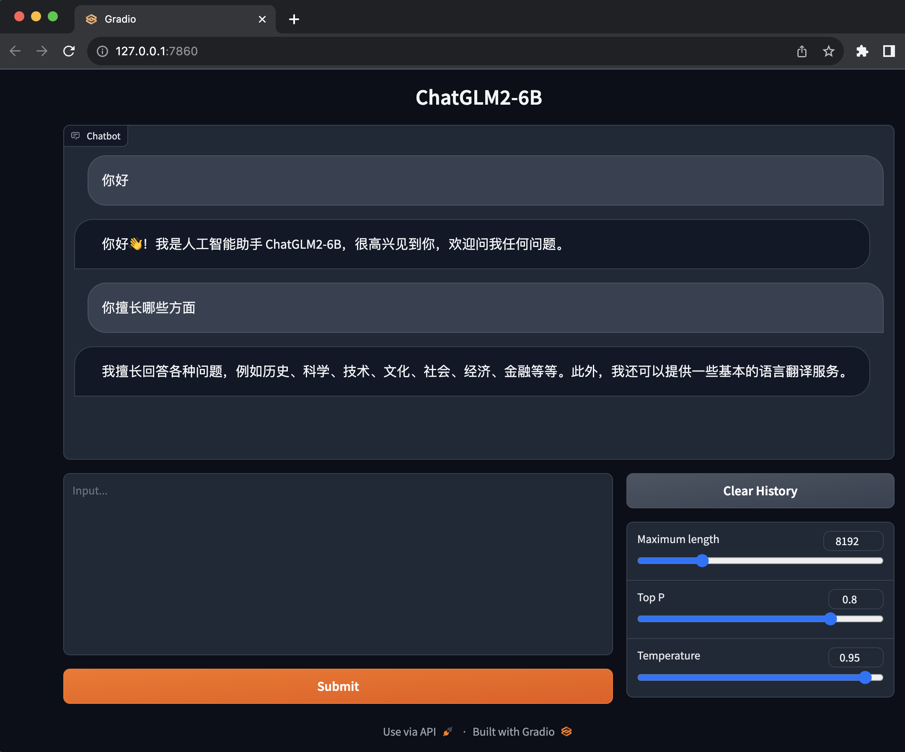
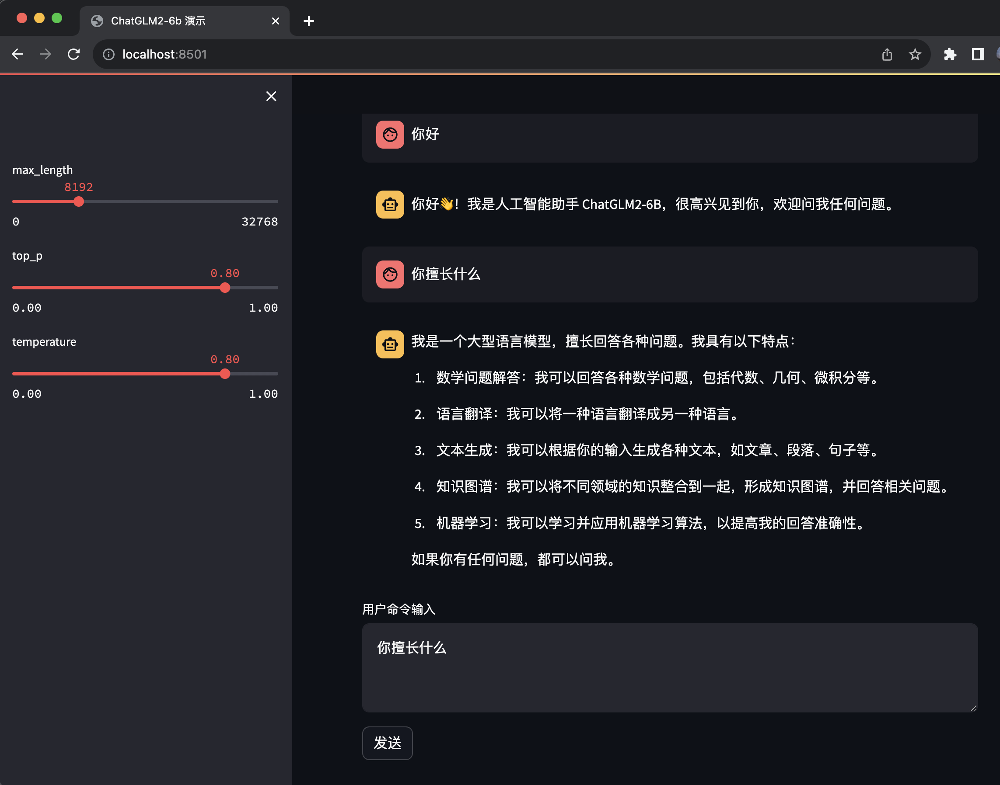

Mac 体验ChatGLM2-6B
文章目录
前言
前不久换了新 Mac ，性能还可以，于是就想试着体验一下 ChatGLM ，看看能不能跑起来。
所以今天就来体验一下 ChatGLM2-6B 。
安装
我这里使用 Anaconda 创建一个 Python 3.9 的环境进行 ChatGLM2-6B 的环境搭建。
|
|
快速在命令行中体验
安装好之后，打开终端，输入 python 然后把下面的代码敲一遍
|
|
这个过程中会从THUDM/chatglm2-6b at main 下载模型，时间会比较久，下载完成之后能看到输出如下响应，说明搭建成功了。如果失败了，可以重新运行，主要还是要解决网络的问题。
|
|
web 版本
在命令行中体验一下还可以，真的使用起来其实是非常麻烦的，还要手输代码。
所以在 ChatGLM2-6B 中还提供了网页版的，使用起来就非常方便了。
在 ChatGLM2-6B 中有 web_demo.py 和 web_demo2.py 这两个文件，我们都去体验一下，不过在体验之前我们需要改动一下代码，因为我们是在 Apple Silicon 上运行的，而代码默认写的是英伟达的 cuda 。
找到 web_demo.py 中的
|
|
将其改为
|
|
改好之后执行以下命令就能够跑起来了，运行会花点时间。
|
|
启动之后会自动帮你打开浏览器并跳转到 http://127.0.0.1:7860/

这个界面就非常友好和简单，它是基于 Gradio 的。下面的输入框就是我们输入问题的地方，上面的就是 ChatGLM2-6B 和我们问答。
web 版本 2
除了基于 Gradio 的版本，还有一个基于 Streamlit 的版本，官方说这个版本更流畅。
在使用 Streamlit 之前需要先安装一下
|
|
安装好之后，还是需要改一下代码，把 cuda 改成 mps 。
找到 web_demo2.py 同样的
|
|
将其改为
|
|
改好之后就可以使用 streamlit run web_demo2.py 来运行程序了。
同样运行起来之后会自动帮你打开浏览器并跳转到 http://localhost:8501/ 
streamlit 打开的过程中会有界面，不像 Gradio 只有在准备好之后才会打开，所以在没有准备好之前 Gradio 是看不到界面的，会卡一会。
不过 streamlit 有个 bug，在点击发送之后，输入框的内容还在，并没有清空输入框。
Streamlit 和 Gradio 两个版本都有一个同样的问题，是输入回车只会换行，不会发送问题给 ChatGLM 。
api 部署
作为一个程序员最喜欢的就是有 API 可以用，幸运的是 ChatGLM2-6B 提供了 API 部署的方式。
在部署之前需要先安装 fastapi uvicorn ，可以用如下指令进行安装
|
|
老规矩，还是要把 cuda 改成 mps
|
|
将其改为
|
|
改好之后就可以运行了
|
|
接着我们就可以使用 POST 进行调用了
|
|
得到结果如下
|
|
有了 API 就能根据自己想象力，自己拓展开发一些应用出来。
总结
- 搭建
ChatGLM2-6B还是挺简单的，本地回答的速度挺快，几乎能做到秒回。 ChatGLM2-6B提供了 web 的方式来回答问题，挺好用，但是有一些小问题需要改进。ChatGLM2-6B提供API的方式，让我们自己开发基于ChatGLM2-6B也变得非常方便。